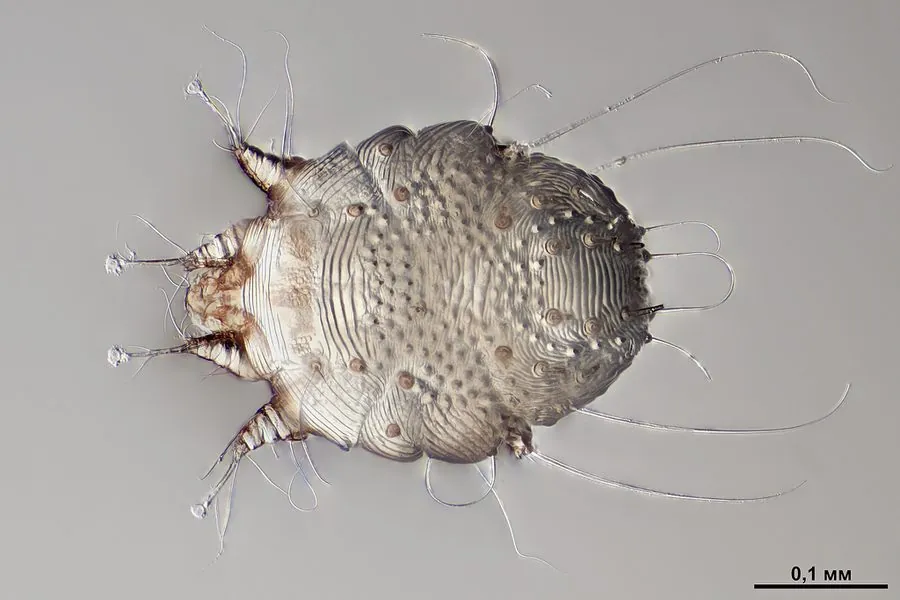

蛛形动物 · 动物界
人疥螨 Sarcoptes scabiei

寄生在人体皮肤表层的微小螨类，在皮肤内挖掘隧道产卵，引起剧烈瘙痒的疥疮，可通过密切接触传播。
- 分类
- 门节肢动物门纲蛛形纲目绒螨目科疥螨科属疥螨属
- 栖息环境
- 人体皮肤表层的角质层内，尤其是手指缝、手腕等薄嫩部位
- 地理分布
- 全球分布，人群密集和卫生条件较差的地区更易流行
- 保护级别
- IUCN 暂无评估；人体寄生虫，无保护级别
物种志
人疥螨雌螨体长仅 0.3–0.4 毫米，雄螨约 0.2 毫米，身体呈圆形或龟形，有四对短足，足末端有爪和吸垫，体表有细密的横纹，肉眼几乎看不清。它终生寄生在人体皮肤最表层的角质层内，用足和口器在皮肤中挖掘隧道，以角质组织和淋巴液为食。
人疥螨呈世界性分布，通过皮肤直接接触或共用衣物、被褥传播，常寄生于手指缝、手腕、腋窝、腹股沟等皮肤薄嫩处。雌螨在皮肤隧道中产卵，一生可产 10–25 枚，卵约 3–4 天孵化，从卵到成虫约需两周。它引起的疥疮表现为剧烈瘙痒，夜间尤甚，皮肤出现丘疹和抓痕；确诊后需遵医嘱使用外用药并消毒衣物被褥，同住者也应同时检查和治疗。
形态与习性
- 食性皮肤角质组织和淋巴液
- 体长雌螨 0.3–0.4 mm，雄螨约 0.2 mm
- 寿命成虫约 1–2 个月
- 繁殖雌螨在皮肤隧道内产卵 10–25 枚，卵约 3–4 天孵化
- 活动节律昼夜活动，夜间瘙痒感更明显
- 危害引起疥疮，剧烈瘙痒，可通过密切接触传播
趣味知识
- 人疥螨会在皮肤表层挖出细小的隧道，并在其中产卵、排泄。
- 疥疮的瘙痒在夜间尤其明显，这是人疥螨活动规律造成的。
- 疥疮传染性较强，患者及同住者应同时检查治疗并消毒衣物。